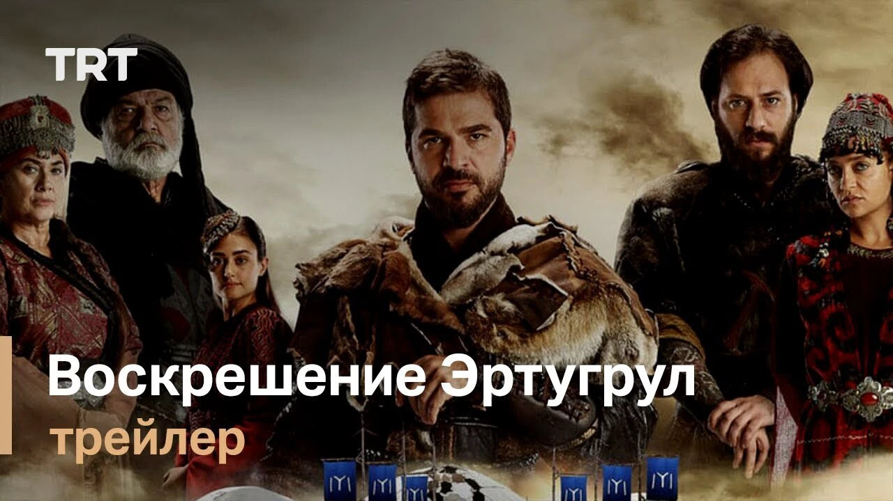
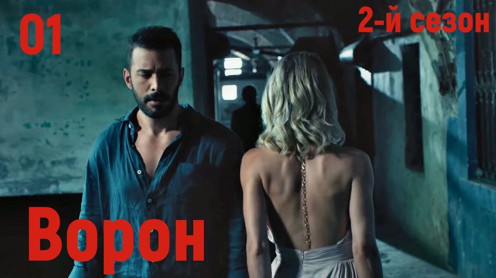

Топ 5 лучших турецких сериалов 2023
«Черная любовь»
Остросюжетная драма «Черная любовь» завоевала высокие зрительские рейтинги и прославилась далеко за пределами родной Турции — так, в 2017 году сериал получил престижную премию «Эмми» в номинации «Лучшая теленовелла». Сериал рассказывает историю двух влюбленных из совершенно разных миров и социальных слоев. Нихан — дочь богатого бизнесмена, который оказался на грани банкротства, Кемаль — сын простого парикмахера. Есть ли будущее у этой любви? Тем более, что ради своего эгоистичного сына Эмира, безумно влюбленного в Нихан, его отец Галип бей способен совершить преступление. Путем шантажа своего компаньона Ондера, отца Нихан, он добивается согласия на свадьбу Нихан и Эмира…
Главные герои:
- Нихан — дочь богатого бизнесмена.
- Кемаль — сын простого парикмахера.
Посмотреть сериал можно по ссылке
ссылка
на сериал
«Постучись в мою дверь»
Самый летний, легкий и романтичный сериал нашей подборки — драмеди «Постучись в мою дверь». Сериал снят в лучших традициях американских ромкомов, но с неповторимым турецким колоритом. У Эды много увлечений, но главная ее страсть — ландшафтный дизайн. После смерти любимых родителей Эда все силы отдает образованию. Как лучшая ученица, она получает грант на стажировку в Италии. Но мечте не суждено сбыться: в последний момент девушку лишают стипендии. Расстроенная Эда начинает работать в цветочном магазинчике своей тети, параллельно пытаясь связаться с Серканом Болатом — молодым бизнесменом и владельцем известной архитектурой фирмы, который и лишил ее гранта.
Главные герои:
- Эда - ландшафтный дизайнер.
- Серкан Болат - молодой бизнесмен и владелец архитектурной фабрики.
Посмотреть сериал можно по ссылке
ссылка
на сериал
«Воскресший Эртугрул»
Всем, кто уже посмотрел «Великолепный век», мы советуем обратить внимание на сериал «Воскресший Эртугрул» — он получился не менее масштабным и уходит еще глубже в турецкую историю, повествуя о событиях, предшествовавших созданию могущественной империи Османов. Действие сериала начинается в 1225 году. Молодой воин Эртугрул, сын Сулеймана Шаха — вождя племени кайи, во время охоты вступает в бой с отрядом рыцарей-крестоносцев, чтобы спасти трех пленников. Не зная точно, кто эти несчастные, Эртугрул приглашает их в свой лагерь, ведь гостеприимство всегда было одной из главных традиций кайи. В лагере незнакомцев встречают настороженно, опасаясь, что их появление навлечет беды на все племя. Тем более, времена сейчас не из легких: мусульмане сражаются друг с другом, Папа Римский призывает европейских принцев отправиться в новый поход на Иерусалим, а самим кайи нужно срочно перебираться на новую стоянку, иначе их ждет голод. Сулейман Шах принимает решение просить землю у эмира Алеппо аль-Азиза в обмен на своих лучших воинов. На переговоры к аль-Азизу должен отправиться один из сыновей Сулеймана — отважный Эртугрул или Гюндогду, давно мечтающий о власти.
Главные герои:
- Эртугрул - сын Сулеймана Шаха — вождя племени кайи/
- Сулейман Шаха — вождь племени кайи
Посмотреть сериал можно по ссылке
ссылка
на сериал
«Ворон»
В сериале «Ворон» о тайнах прошлого и отчаянной мести снялся один из самых популярных турецких актеров современности Барыш Ардуч. Отец Кузгуна — Юсуф — хороший и честный полицейский, никогда не бравший взяток. У него есть лучший друг и напарник Рыфат, которому он полностью доверяет. Но однажды Рыфат жестоко подставляет приятеля, что приводит к его трагической смерти. После этого подлого поступка жена Юсуфа с детьми уезжает из города, и Кузгун на 20 лет оказывается вдали от Стамбула. Его ждет сложная жизнь, полная боли, страданий и жажды мести. И вот теперь, когда Кузгун стал совсем взрослым, он готов вернуться, наказать обидчика и забрать у него все. В столице Кузгун встречает Дилу — свою подругу, в которую был влюблен в детстве. Она работает адвокатом. Между ними с новой силой вспыхивают чувства, но есть проблема: Дила — дочь Рыфата. Можно ли навредить Рыфату, не обидев при этом Дилу? С этим вопросом Кузгуну предстоит разобраться.
Главные герои:
- Юсуф — хороший и честный полицейский, никогда не бравший взяток.
- Рыфат - напарник.
- Дила — дочь Рыфата.
Посмотреть сериал можно по ссылке
ссылка
на сериал
«Не отпускай мою руку»
Азра — дочь известного турецкого шашлычника. Дженк — парень из обеспеченной семьи, владеющей пищевой фабрикой. Они приезжают из США в Турцию и знакомятся в аэропорту, когда их чемоданы путают. Азра и Дженк — дети из богатых турецких семей, связанных с ресторанным бизнесом. Родители решили дать им лучшее образование и отправили на учебу в Америку. Молодые люди поступили в один университет, живут рядом, но до сих пор не знакомы. Азра познает кулинарное дело, мечтает быть кондитером и открыть свое заведение, как отец. Дженк хочет стать наследником империи своих родителей и заниматься бизнесом. Встреча героев происходит неожиданно. На каникулы они независимо друг от друга возвращаются с учебы в родной Стамбул к семьям. Сначала между Азрой и Дженком происходит ссора в самолете, а в аэропорту оказывается, что их багаж перепутали. После этого знакомства они могли больше и не видеться, если бы не бабушка Дженка, которая увидела зарождающуюся любовь и подстроила новую встречу. Будут ли герои вместе? Как сложится их жизнь?
Главные герои:
- Азра — дочь известного турецкого шашлычника
- Дженк — парень из обеспеченной семьи, владеющей пищевой фабрикой.
Посмотреть сериал можно по ссылке
ссылка
на сериал